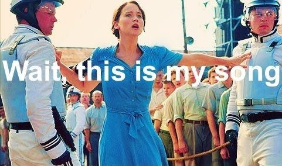
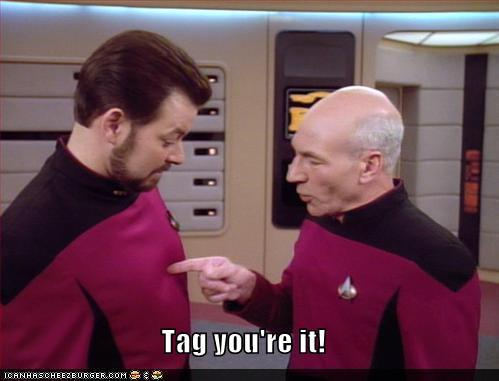
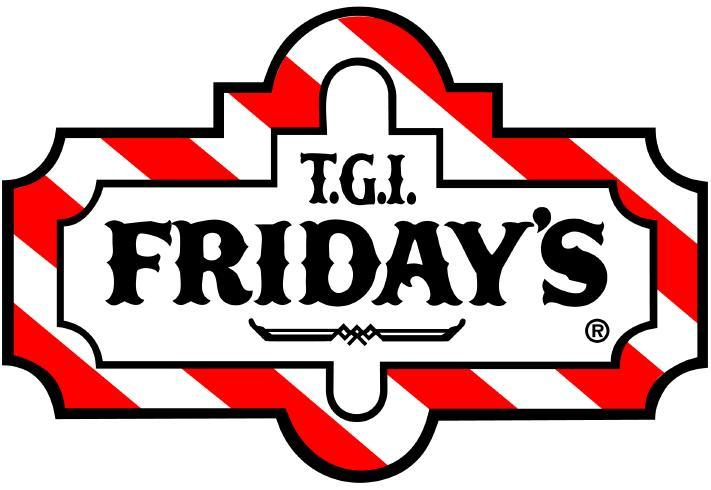
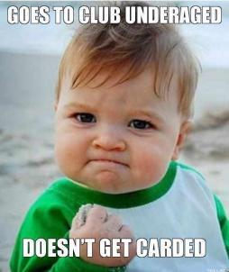
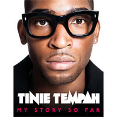
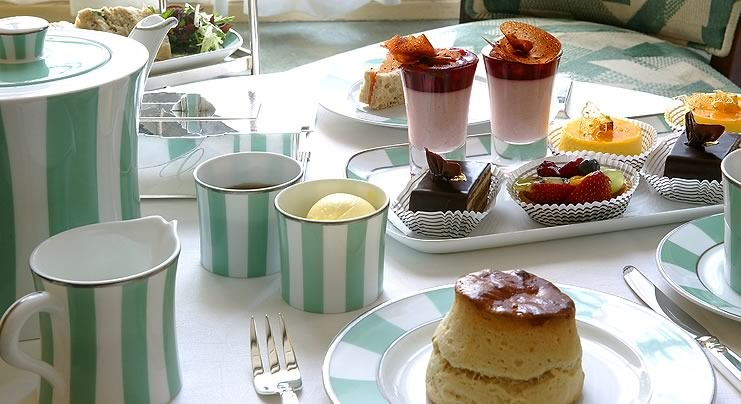
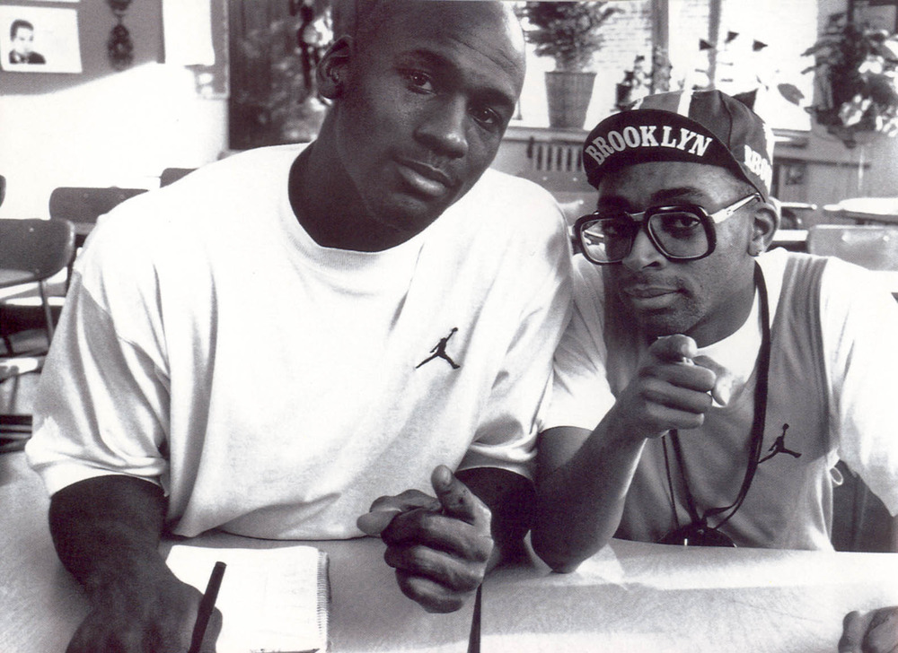
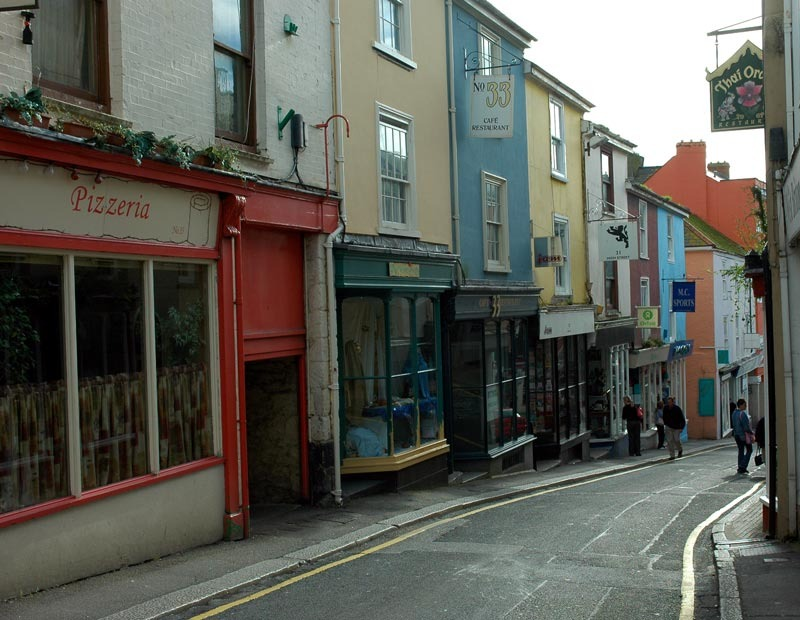
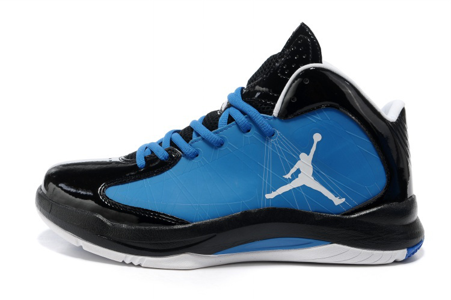
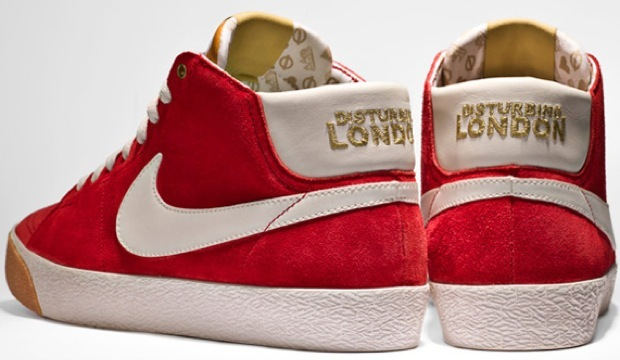

Removing the need to click on each text section for a smoother experience.
Original page: http://rapgenius.com/Tinie-tempah-trampoline-lyrics
Tinie made this song with every intent of it being a club banger. He even got the obligatory feature verse from 2 Chainz needed to make a hot song these days!
Eeny, meeny, miny, moe, which can be spelled a number of ways, is a children’s counting rhyme, used to select a person to be “it” for games (such as tag)
Tinie’s excited for the weekend
Tinie is now 24, so he’s tired of getting carded at clubs, but because he’s famous he feels like he shouldn’t be getting carded period.

He has a myriad amount of releases including
-Disc-Covery (2010)
-Demonstration (2013)
and the singles Pass Out, Frisky, Written in the Stars, Miami 2 Ibiza, Game Over, Invincible, Wonderman and many more. Aside from his production credits on singles with artists like JLS, Emeli Sande, Labrinth and others, he authored an autobiography Tinie Tempah: My Life So Far which you can also get on itunes.
Tinie is so big now that he even has his own ‘published works’ in his library. Not bad going from the kid that no one cared about
Tinie’s neighbors hate the girl he brings home to have sex with because she never wears clothes.
“Nightie” is slang for a night dress, which is already quite revealing
Tinie only goes to the most luxurious of places to get the best tea
Especially when it looks like this !
Spike Lee and Michael Jordan have even gone as far as to create a joint line in the Jordan Spizikes.
Tinie is high end which means expensive
People are “swagger jacking” or stealing his style because it’s so unique and cool.
As he describes in the second verse of “Written in the Stars” Tinie grew up poor, so he, like many black youths, grew up saving money for Nike shoes
Now everyone wants Tinie New Nike Blazers
